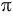
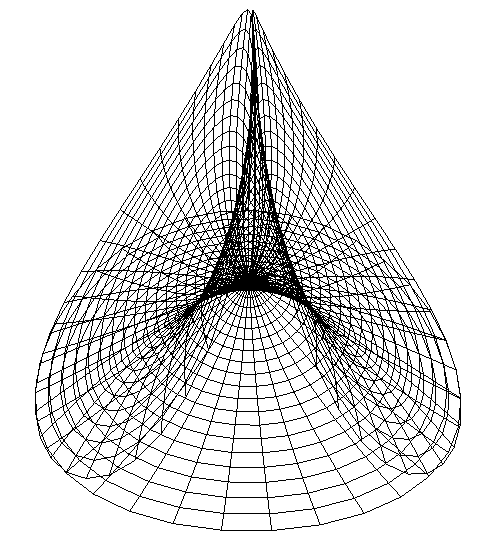
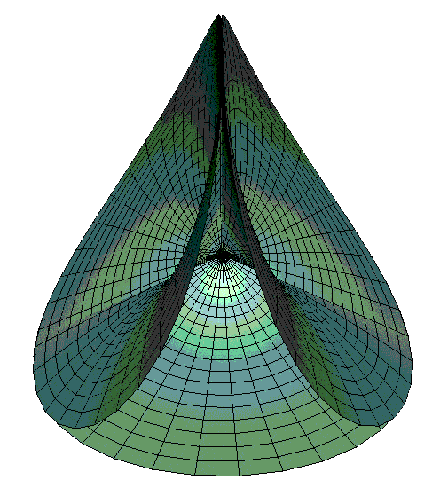
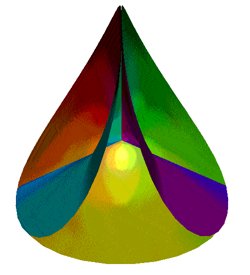
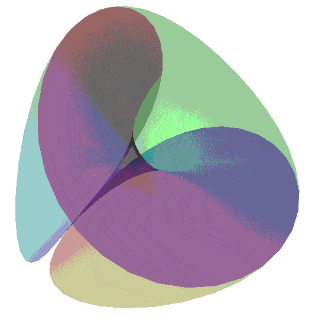

Maeder's Owl
Graphics by
Paul Bourke
December 1995
Source Code
- creates OOGL file for GeomView
Equations
x = v cos(u) - 0.5 v
2
cos(2 u)
y = - v sin(u) - 0.5 v
2
sin(2 u)
z = 4 v
1.5
cos(3 u / 2) / 3
0 <= u <= 4  and 0 <= v <= 1



